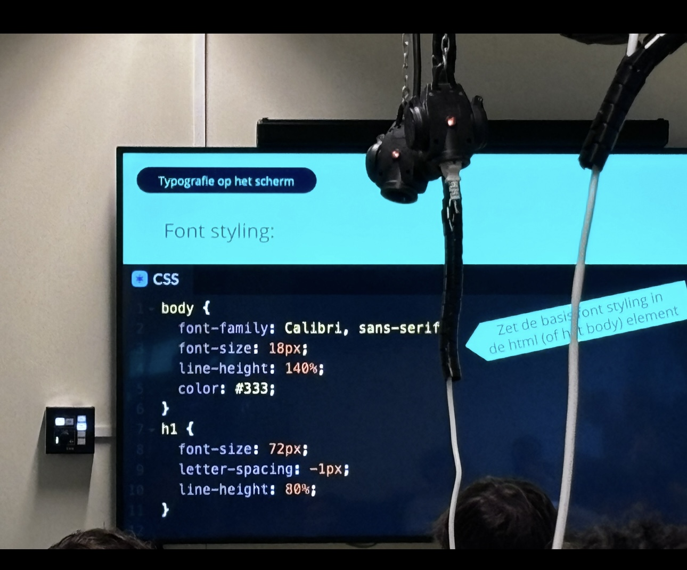
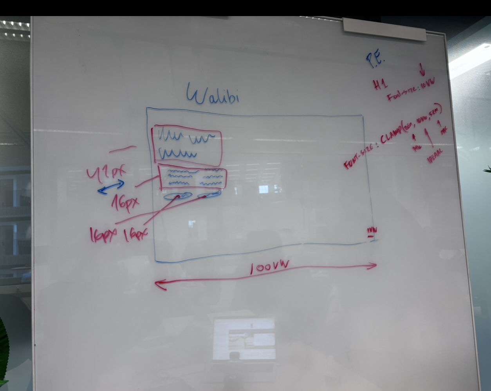
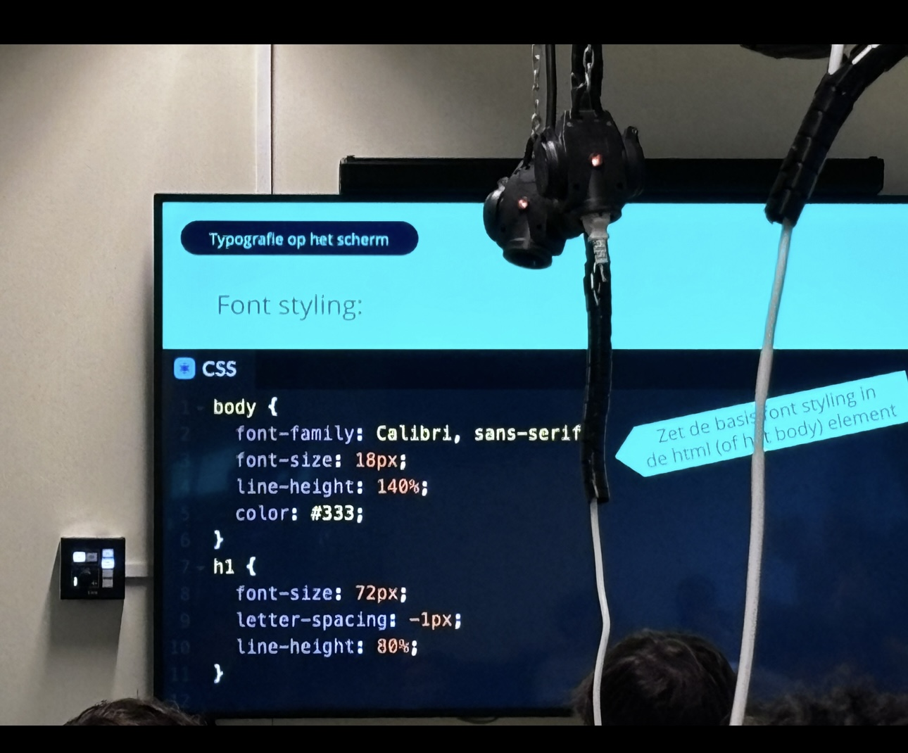
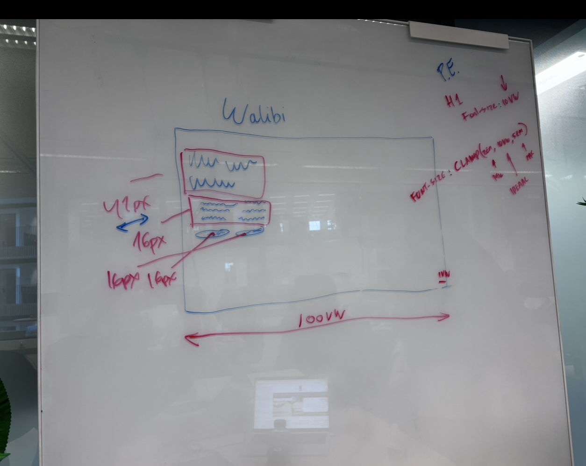
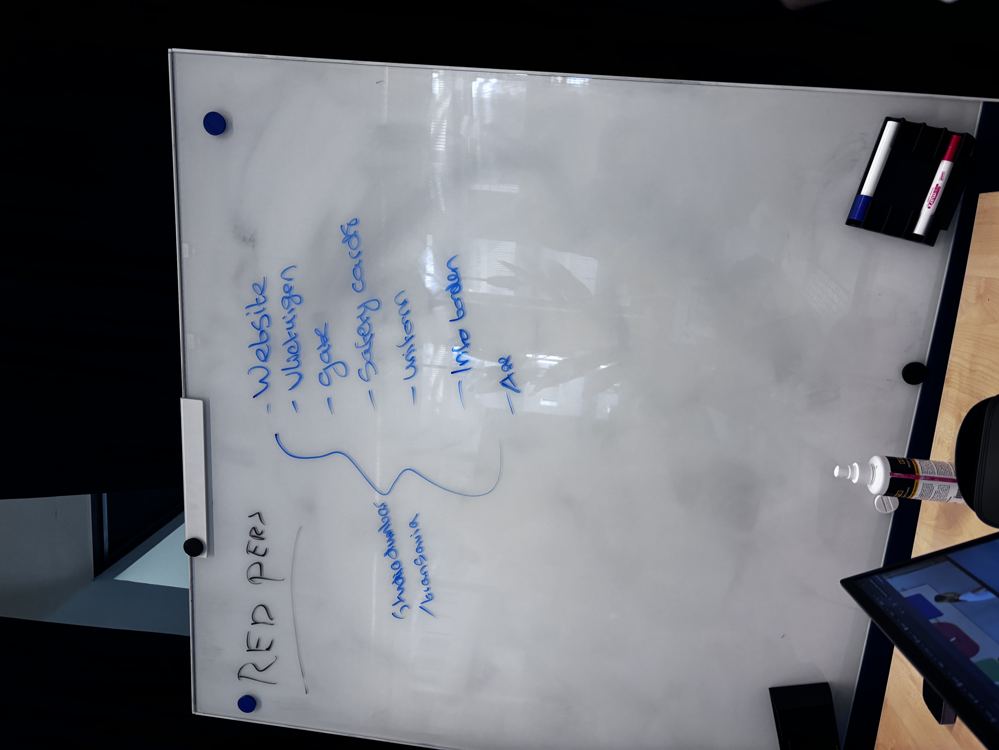
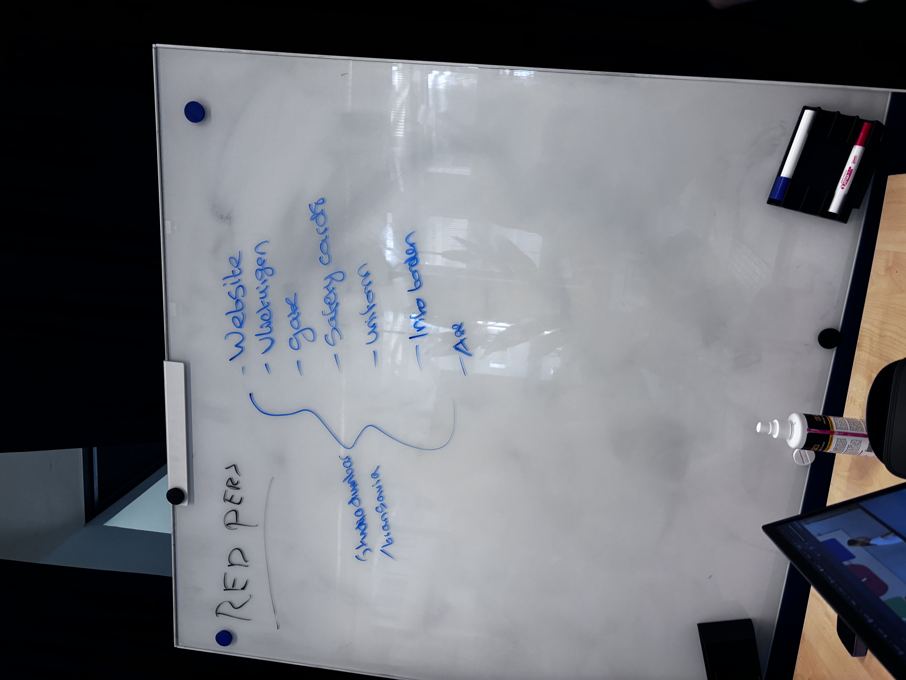

Dinsdag 3/9
Thema: Selectors, Properties, DevTools
Selectors
Selectors worden gebruikt in CSS om elementen op een webpagina te selecteren en te stijlen. Ze helpen je om specifieke HTML-elementen te stylen op basis van hun naam zoals:
- Element Selector: Selecteert alle elementen van een bepaald type. Bijvoorbeeld:
pselecteert alle paragrafen. - Class Selector: Selecteert alle elementen met een bepaalde klasse. Bijvoorbeeld:
.buttonselecteert alle elementen met de klassebutton. - ID Selector: Selecteert een enkel element met een specifieke ID. Bijvoorbeeld:
#headerselecteert het element met de IDheader. - Attribute Selector: Selecteert elementen op basis van hun attributen. Bijvoorbeeld:
[type="text"]selecteert alle input-elementen met het type "text".
Properties
Properties zijn instellingen die je met CSS kunt gebruiken om de stijl van elementen te veranderen. Elke property heeft een waarde die bepaalt hoe de stijl eruitziet:
- Color: Bepaalt de tekstkleur, bijvoorbeeld:
color: red; - Font-size: Bepaalt de grootte van de tekst, bijvoorbeeld:
font-size: 16px; - Background-color: Bepaalt de achtergrondkleur van een element, bijvoorbeeld:
background-color: blue; - Margin: Bepaalt de ruimte rond een element, bijvoorbeeld:
margin: 10px; - Padding: Bepaalt de ruimte binnen de rand van een element, bijvoorbeeld:
padding: 5px;
DevTools
DevTools zijn hulpmiddelen in webbrowsers zoals Chrome en Firefox die je helpen om webpagina's te inspecteren, testen en verbeteren.
- Element Inspector: Hiermee kun je de HTML- en CSS-structuur van een pagina direct bekijken en aanpassen terwijl je de pagina in je browser opent.
- Console: Hiermee kun je JavaScript-code uitvoeren en direct foutmeldingen en logberichten zien.
Met vandaag heb ik geleerd.
Woensdag 4/9
Thema: Wireframes en waarom is het handig?
Wireframes zijn schetsen die je handmatig kunt maken om de lay-out en structuur van een website te tonen. Ze hoeven niet perfect te zijn. Wireframes helpen je om te plannen waar elementen zoals knoppen, menu's en content op de pagina moeten komen, zonder je zorgen te maken over de grafische stijl.
Donderdag 5/9
Thema: JavaScript
JavaScript
JavaScript is een programmeertaal die je kunt gebruiken om je website interactief en dynamisch te maken. Het werkt samen met HTML en CSS om een webpagina niet alleen visueel aantrekkelijk, maar ook functioneel te maken.
DOM Manipulatie: Dit is het proces waarbij JavaScript de Document Object Model (DOM) gebruikt om toegang te krijgen tot HTML-elementen en deze te wijzigen. De DOM fungeert als een tussenlaag tussen HTML en JavaScript, waardoor je met JavaScript de structuur en inhoud van de webpagina dynamisch kunt aanpassen zonder de pagina opnieuw te hoeven laden.
Maandag 09/09
Thema: Team indeling
Team indeling
Het team is gekozen voor een mini-project waarbij je op een creatieve manier de visitekaartjes van de hele klas op jouw eigen manier moet integreren in de website. Daarnaast moet je informatie over de Amstcampus verzamelen en ook op de website plaatsen.
We hebben de taken op Miro verdeeld, en ik ben meteen aan de slag gegaan. Ik ben al een beetje bekend met Miro-borden.
Donderdag 12/9
Thema: Media query
Media queries helpen websites goed te functioneren op verschillende apparaten zoals smartphones en tablets.
Maandag 16/9
Thema: Visuele Hiërarchie
Visuele Hiërarchie
Visuele hiërarchie helpt om te bepalen wat belangrijk is in je ontwerp en hoe de informatie wordt gepresenteerd. Het zorgt ervoor dat de gebruiker snel begrijpt welke elementen belangrijk zijn en in welke volgorde ze moeten worden bekeken.
- Grootte: Grotere elementen trekken meer aandacht.
- Kleur: Felgekleurde of contrasterende elementen vallen meer op.
- Typografie: Verschillende lettergroottes en stijlen maken informatie duidelijker.
- Ruimte: Witruimte helpt om elementen van elkaar te scheiden.
- Uitlijning: Zorgt voor een georganiseerde uitstraling.
Dinsdag 17/9
Thema: CSS Animatie en Pseudo-elementen
CSS Animatie en Pseudo-elementen
@keyframes:
Hiermee definieer je een animatie in CSS. Het specificeert de stappen van de animatie en de veranderingen die plaatsvinden op verschillende momenten tijdens de animatie.
CSS-animatie is mijn favoriete techniek om toe te passen. Ik heb veel animaties geïmplementeerd op de Squad-teampagina. Ik heb een 3D-slider gemaakt die draait met de namen van elke klasgenoot.
Pseudo-elementen ::before en ::after:
Pseudo-elementen zijn speciale elementen die je kunt gebruiken om extra inhoud toe te voegen aan een element zonder extra HTML toe te voegen. Ze worden gedefinieerd met dubbele dubbele punten ::, en je kunt ze gebruiken om stijlen toe te passen vóór of na de inhoud van een element.
- ::before: Plaatst inhoud vóór de inhoud van het geselecteerde element.
- ::after: Plaatst inhoud na de inhoud van het geselecteerde element.
Voorbeelden van Gebruik: In de team Squadpage heb ik met pseudo-elementen de kleur van de container langzaam van geel naar paars laten veranderen.
Woensdag 18/9
Thema: Squadpage afronding
Vandaag heb ik verder gewerkt aan de squadpage en de puntjes op de i gezet. Ik heb telefonisch afspraken gemaakt met Halima, omdat zij ziek is. Zij gaat de README en issues toevoegen en eventueel nog wat wijzigingen aanbrengen in de code en op het Miro-bord indien nodig.
Wat ik heb geleerd, is hoe belangrijk het is om taken duidelijk te verdelen en te communiceren met teamleden. Daarnaast heb ik geleerd hoe ik moet omgaan met situaties waarin teamleden afwezig zijn. Een teamlid is ziek, dus daar kan zij niets aan doen. Een ander teamlid heeft echter niets van zich laten horen, wat de situatie lastiger maakt. In plaats van extra werk te doen, moet ik meer ervaring opdoen zodat ik kan leren hoe ik met zulke situaties kan omgaan.
Donderdag 19/9
Thema: Media queries in mini-project
Media queries zoals min-width, max-width, en orientation helpen de lay-out aan te passen voor verschillende schermgroottes.
Vrijdag 20/9
Thema: Retrospect Squad Page
Maandag 23/9
Thema: Bedrijf kiezen voor project
Vandaag moest ik een bedrijf kiezen waar ik mijn project voor de aankomende sprint aan wil werken. Het was lastig om een keuze te maken, omdat dit de eerste keer is dat ik zoiets doe. De product owner wil dat we de website aantrekkelijker en responsiever maken voor de gebruikers.
Wat me direct opviel, is dat de huidige website van het bedrijf veel werk nodig heeft. De site ziet er saai uit en de informatie is overal verspreid, waardoor het een rommelige indruk maakt.
Mijn plan is om inspiratie op te doen bij bedrijven die ze zelf hebben aanbevolen, zoals:
Ik wil ideeën opdoen voor het beste kleurenpalet dat past bij een journalistiek bedrijf en op zoek gaan naar de beste elementen om toe te passen in het project.
Woensdag 25/9
Thema: Figma-design en website layout
Vandaag heb ik een Figma-design gemaakt om te kunnen beoordelen of mijn ontwerp een verbetering is ten opzichte van de huidige website. Hiermee wil ik visualiseren hoe de nieuwe lay-out en elementen eruit zouden kunnen zien en of ze daadwerkelijk bijdragen aan een betere gebruikservaring.
Dit is de eerste keer dat ik eerst een design moet maken voordat ik begin met coderen. In het verleden had ik hier moeite mee; ik begon altijd met coderen en maakte daarna pas het design. Nu begrijp ik echter waarom het belangrijk is om eerst een design te maken: het geeft je veel meer inzicht en maakt het hele proces logischer en gestructureerder. Hierdoor kun je beter plannen en voorkom je dat je tijdens het coderen steeds aanpassingen moet doen.
Ik had vandaag oefeningen over het recht trekken van lijnen, waar ik nog moeite mee heb. Dit is iets waar ik verder aan moet werken. Daarnaast heb ik ook een sitemap gemaakt, wat helpt om een overzicht te krijgen van alle pagina's die de hele website moet hebben. Een sitemap is een visuele weergave van de structuur van een website en kan heel handig zijn bij het plannen en ontwerpen van een website. Het geeft duidelijk weer hoe de verschillende pagina's met elkaar verbonden zijn en helpt om het project overzichtelijk te houden tijdens de ontwikkeling.
Vrijdag 27/9
Thema: Feedback van Robin over HTML-code
Vandaag heb ik feedback ontvangen van Robin over mijn HTML-code en moet ik enkele aanpassingen doorvoeren. Dit was zijn feedback:
Font Awesome is wel handig, maar kan juist problematisch zijn voor gebruikers, vooral voor mensen die een screen reader gebruiken. Font Awesome zet namelijk bepaalde letters om naar icoontjes, zoals een letter A in een specifiek font om een icoon te krijgen. Dit is echter een probleem voor screen readers, omdat ze dan alleen de letter voorlezen, zonder dat duidelijk wordt dat het om een icoon gaat. Daarnaast moet een gebruiker alle iconen van Font Awesome downloaden, ook als er maar een paar icoontjes op de pagina worden gebruikt. Dit kan nadelig zijn voor mensen met langzamere internetverbindingen.
Robin raadde me daarom aan om SVG-iconen te gebruiken in plaats van Font Awesome. SVG's zijn schaalbare vectorafbeeldingen, die je direct kunt integreren in je HTML. Ze bieden meerdere voordelen, zoals betere toegankelijkheid en snellere laadtijden.
Zijn suggestie was om iconen te downloaden als SVG-bestanden via een site zoals SVGRepo, deze in de assets-map van mijn website te plaatsen, en ze dan aan te roepen met een <svg>-element in de HTML.
Ik heb nog niet veel ervaring met SVG-elementen, dus dit is iets wat ik de komende periode verder moet onderzoeken om zijn feedback goed te kunnen verwerken.
Maandag 31/9
Thema: CSS Grid en layout modellen
Vandaag heb ik uitleg gekregen over flow layout, inline en block elementen, en verschillende layoutmodellen in CSS. De focus lag voornamelijk op CSS Grid, een layout-systeem dat ik eigenlijk pas recentelijk probeer toe te passen in mijn opdrachten. Hoewel ik nog niet helemaal bekend ben met Grid, zie ik het potentieel en ben ik bezig om het beter onder de knie te krijgen.
Ik heb opdrachten gekregen die specifiek gericht zijn op het werken met Grid. Deze moet ik nog afronden voordat ik de wijzigingen kan pushen naar de main branch. Daarnaast moet ik ook nog 9 user stories maken om mijn werk verder te structureren en duidelijkheid te creëren in wat er precies moet gebeuren.
Het zal wat tijd en oefening kosten om alles goed toe te passen, maar ik merk al dat het werken met Grid een krachtige manier is om layouts flexibel en responsief te maken.

 





 
